A prótese shinobi é uma ferramenta dada a Sekiro após ele perder seu braço, com ela ele pode utilizar várias ferramentas que vai encontrando ao longo de sua jornada para o combate e afins, o uso dessas ferramentas gasta brasões espirituais, que são pequenos brasões que podem ser encontrados ao longo do caminho, Sekiro pode melhorar essas ferramentas no Escultor após entrega-lo o Barril Mecânico, além de suas ferramentas a prótese shinobi possui um gancho embutido que sekiro pode usar para se locomover.
Shuriken Anexada
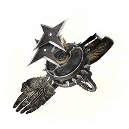
Uma ferramenta prostética composta de uma roda de shurikens encaixada na prótese shinobi. Seu uso custa brasões espirituais. Arremesse uma shuriken carregada na roda em um alvo realizando um único movimento fluído. A shuriken arremessada causa dano à vitalidade e à postura de inimigos; especialmente eficaz contra aqueles que tendem a mover-se pelos ares
Melhorias:
- Shuriken giratória;
- Shuriken perfurante;
- Kunai fantasma;
- Arremesso de sens;
- Shuriken de lazulita;
Item para construir:
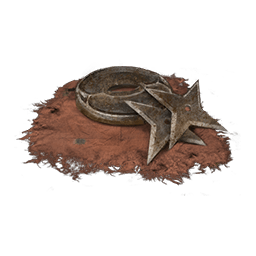
Roda de shuriken
Como obter:
Encontrado logo no inicio do jogo perto de um Ídolo do Escultor em um corpo.
Bombinha Shinobi
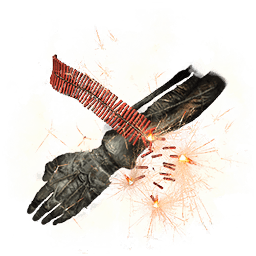
Ferramenta prostética equipada com as bombinhas de Robert. Custa brasões espirituais. Libera um clarão explosivo que cega temporariamente oponentes e causa dano à postura de inimigos do tipo animal. Tem um campo de efeito frontal amplo, que pode afetar vários adversários. Adequado para imobilizar inimigos por um tempo e assustar monstros.
Melhorias:
- Bombinha de mola;
- Faísca duradoura;
- Faísca de fumaça púrpura;
Item para construir:
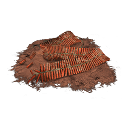
Bombinhas do Robert
Como obter:
Vendido pelo Memorialista dos corvos, provavelmente o primeiro membro da multidão memorial que você encontrará na sua jornada nas redondezas de Ashina.
Duto Flamejante
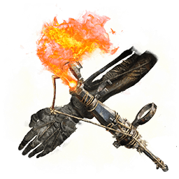
Ferramenta prostética feita a partir de um cano flamejante anexado. Seu uso custa brasões espirituais. Causa dano de fogo a inimigos através de uma explosão e também aplica a alteração de estado "Queimadura". É difícil controlar a fúria dos "Olhos Vermelhos" através do poder do homem apenas. Mas aquilo que eles mais temem é fogo. Esta ferramenta possui o poder para fazê-los estremecer.
Melhorias:
- Duto flamejante de mola
- Duto flamejante de Okinaga
- Chama sagrada de lazulita
Item para construir:
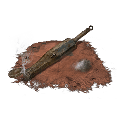
Cano flamejante
Como obter:
Encontrado na memória da Propriedade Hirata, dentro de uma fogueira guardada por vários inimigos logo no início da memória.
Machado Anexado
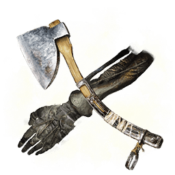
Ferramenta prostética carregada com um machado shinobi pesado. Custa brasões espirituais para usar. A força do machado anexado está em seu peso. Um golpe pode facilmente estraçalhar um escudo de madeira ou desfazer a postura de um inimigo.
Melhorias:
- Machado de mola
- Machado de faísca
- Machado de lazulita
Item para construir:
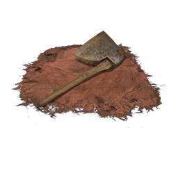
Machado shinobi do Macaco
Como obter:
Encontrado na memória da Propriedade Hirata, você encontrará um homem morrendo que falará sobre um machado, se seguir a esquerda encontrará uma porta sendo guardada por 2 homens, o machado estará dentro de uma casinha de jardim.
Lança Anexada
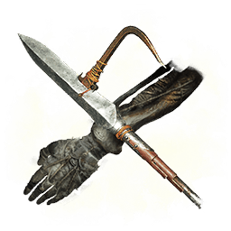
Ferramenta prostética anexada com o chifre quebrado de Oniwa. Seu uso custa brasões espirituais. Desfere investidas de grande alcance. Inimigos leves atingidos pela lança podem ser puxados em direção ao usuário. É capaz de arrancar armaduras rudimentares de inimigos. "Destruição de armaduras" era uma técnica famosa de Gyoubu Oniwa.
Melhorias:
- Lança anexada arremetedora
- Lança anexada dilacerante
- Lança espiral
- Chama ardente
Item para construir:
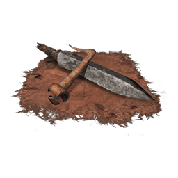
Chifre quebrado de Gyoubu
Como obter:
Encontrado em uma casa trancada na área inicial do jogo, sua chave pode ser encontrada matando um guarda na ponte em direção ao Templo Senpou no Monte Kongo a partir do Castelo de Ashina.
Corvo da Névoa
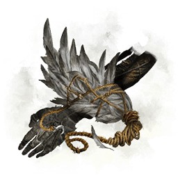
Ferramenta prostética equipada com a pena de Corvo da Névoa. Custa brasões espirituais para usar. Ao ser atacado, desapareça como a névoa e se mova para longe. Quando você acha que capturou um, tudo que resta são penas. Essa é a marca do verdadeiro Corvo da Névoa
Melhorias:
- Corvo da Névoa ancião
- Corvo da Névoa grandioso
Item para construir:
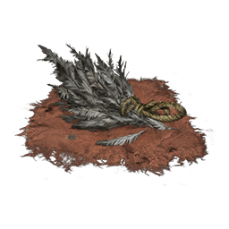
Penas de Corvo da Névoa
Como obter:
Encontrado na memória da Propriedade Hirata, em uma passagem secreta seguindo o rio perto da nascente, subindo pela passagem terá um templo protegido por um inimigo.
Apito de dedo
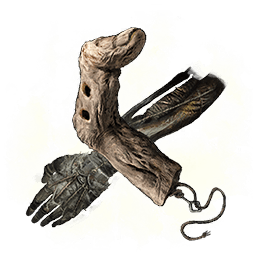
Ferramenta prostética criada acoplando-se um dedo esguio à prótese. Seu uso custa brasões espirituais. Seu som chama a atenção do inimigo, atraindo-o para o local do barulho. Ao marcar um alvo, somente o inimigo marcado ouvirá o apito. O som do apito de dedo enfurece monstros tornando-os incapazes de distinguir aliados de inimigos.
Melhorias:
- Eco da montanha
- Malcontente
Item para construir:
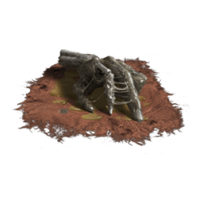
Dedo fino
Como obter:
Encontrado derrotando o Primata Guardião no Vale Bodhisattva dentro Vale Submerso.
Sabimaru
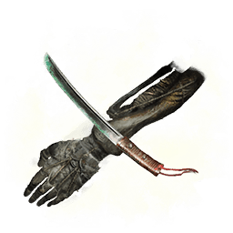
Uma ferramenta prostética feita com a lâmina Sabimaru, possibilitando desferir ataques rápidos. Seu uso custa brasões espirituais. A ferrugem azulada venenosa da espada Sabimaru aplica a alteração de estado "Veneno". Brandida antigamente, a ferrugem azul da espada foi usada para repelir as desumanas guerreiras Okamis. Mesmo agora, é provável que seja eficaz contra suas descendentes.
Melhorias:
- Sabimaru aprimorada
- Sabimaru perfurante
- Sabimaru de lazulita
Item para construir:
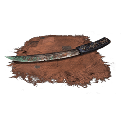
Sabimaru
Como obter:
Encontrado dentro do Castelo de Ashina, próximo a um Ídolo do Escultor e antes da luta contra Genishiro Ashina.
Guarda-Chuva Anexado
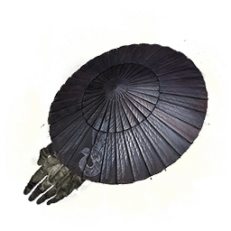
Ferramenta prostética criada ao anexar um guarda-chuva de ferro a uma prótese. Seu usos custa brasões espirituais. Quando aberto, ele defende ataques de todas as direções. Mantenha-o aberto quando em movimento para se proteger de ataques leves. Mas este guarda-chuva não protegerá você de ataques baixos.
Melhorias:
- Guarda-chuva magnético
- Guarda-chuva lilás da Fênix
- Guarda-chuva lótus de Suzaku
Item para construir:
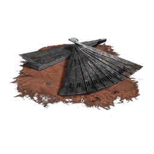
Fortaleza de ferro
Como obter:
Encontrado descendo o Castelo de Ashina em direção a ponte quebrada, é vendido pelo Texugo Chapéu Negro.
Abdução Divina
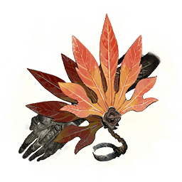
Uma ferramenta prostética equipada com um grande leque. Custa brasões espirituais para usar. Reúne e libera uma rajada de vento, forçando o inimigo atingindo por ela a dar meia-volta. É um tipo de rajada da qual é possível retornar rapidamente. Porém, dizem que só é possível retornar uma vez. Se for levado novamente, não há mais retorno.
Melhorias:
- Abdução divina dupla
- Vórtice dourado
Item para construir:
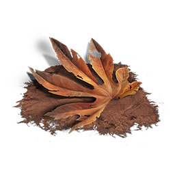
Leque grande
Como obter:
Encontrado no Vale Submerso, na sala da luta contra o mini-boss Braço-Longo Centopéia Girafa.